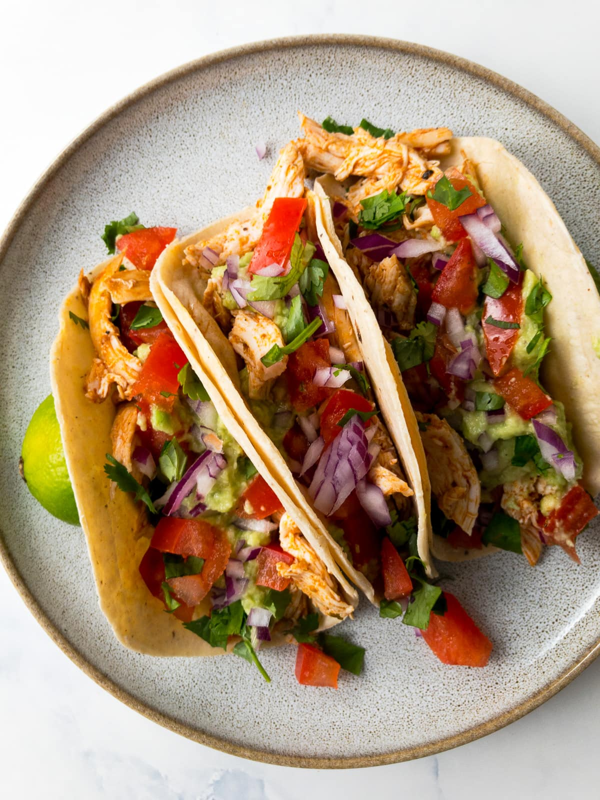

Chicken Tacos

Delicious chipotle chicken tacos with avocado creme
You know what tastes like summer? Yes a nice cold alcoholic beverage of choice, but also, some nice and slighly
spicy chicken tacos with grilled veggies and hints of chipotle, lime and cilantro with some cool avocado creme!
Ingredients
Tacos
- 1lb boneless chicken thighs (or breasts if you insist)
- 2tbp neutral oil (I prefer avocado oil)
- Spice mix consisting of one pinch of salt, pepper, garlic powder, cumin, and chili powder
- One large or two small yellow onions
- Two bell peppers, mix colors for style!
- One small can of minced chipotle peppers in adobo sauce
Creme
- Two fresh avocados
- Half cup, or heaping spoonful, of non-fat greek yogurt or sour cream
- Milk, portion depends on how thick or thin you want your creme
- Freshly chopped cilantro, at least 1tbs
- Two limes
- Tortillas
Steps
Tacos
- Start by prepping all the ingredients. Chop all the veggies and the chicken into bite-sized pieces, finely chop the cilantro, and halve the limes
- In a mixing bowl, mix together 1tbp of oil, and your spice mix with your chopped chicken
- Heat a medium sized pan over medium high heat. Once the pan is hot, add your chicken
- Once your chicken is cooked through, remove it from the pan and set aside
- Reduce the heat on the pan to medium, add the remaining oil, and throw in all your veggies, you may add additional salt and pepper to taste
- Once all the veggies have softened, reduce the heat to low, and stir in the minced chipotle peppers and sauce. Be careful! These are spicy so only add as much as you can handle!
- Add chicken back into the pan and keep warm. It is now ready to serve.
Creme(you will want a processor or blender)
- Remove the pit and skin from your avocados and cut into chunks
- Add avocados, 1tbp of chopped cilantro, yogurt, the juice from one whole lime, and a splash of milk
- Blend on high until smooth. Add more yogurt and milk to achieve desired texture.
Conclusion
And thats it! Just add your creme first to a tortilla followed by a heaping spoonful of chicken and veggies, and top it off with some left over cilantro and a squeeze of fresh lime juice!